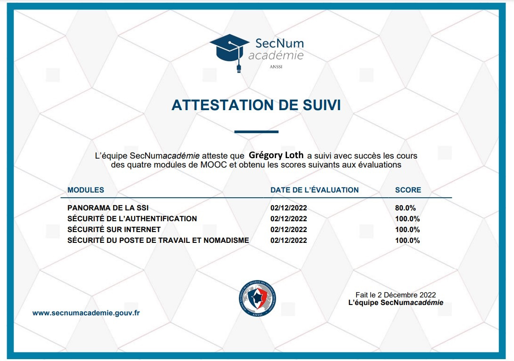

Sensibiliser à la sécurité informatique
Apprendre les bonnes pratiques de sécurité
Améliorer mes compétences en sécurité
En liaison avec ma formation de BTS SIO
Indispensable dans le domaine de l'informatique
Compétences qui me serviront dans mon futur professionnel
Savoir se protéger des différents dangers d'internet
Navigateur WEB (secnumacademie.gouv.fr)
Ressources mises à dispositions
1 - Panorama de la SSI
Un monde numérique hyper connecté
Un monde à hauts risques
Les acteurs de la Cybersécurité
Protéger le cyberespace
Les règles d'or de la sécurité
2 - Sécurité de l'authentification
Principe de l'authentification
Attaques sur les mots de passe
Sécuriser ses mots de passe
Gérer ses mots de passe
Notion de cryptographie
3 - Sécurité sur Internet
Internet : De quoi s'agit-il ?
Les fichiers en provenance d'internet
La navigation web
La messagerie éléctronique
L'envers du décor d'une connexion web
4 - Sécurité du poste de travail et nomadisme
Application et mises à jour
Options de configuration de base
Configurations supplémentaires
Sécurité des périphériques amovibles
Séparation des usages
Résultats
